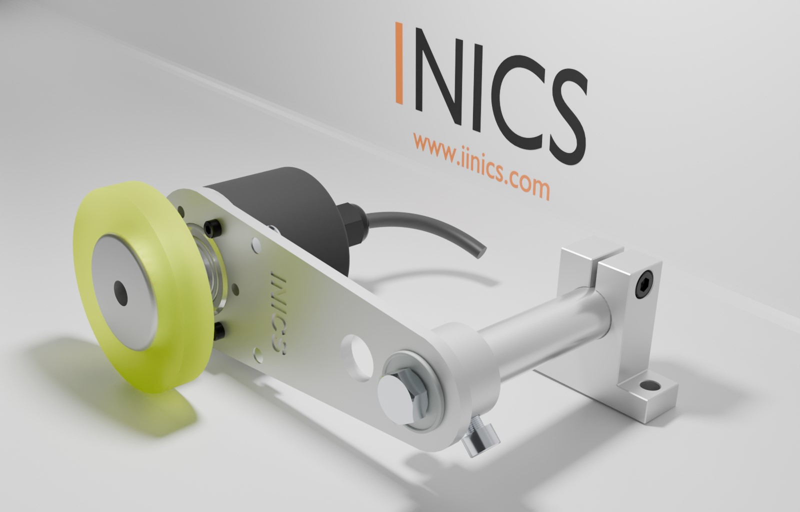

A measuring wheel and incremental encoder in one. Rolling on a
moving surface, it outputs travel and speed directly as
length-unit pulses — ideal for conveyors, transfer lines and
fabric or cable length measurement.

1 MM
Min. Measuring Unit
200 MM
Wheel Circumference
A·B·Z
Output Channels
5,000 RPM
Max. Speed
Key Features
FEATURE 01
Pulses Directly in Length Units
Resolution is specified in length, not turns. On the 1 mm model,
1,000 pulses simply equal 1 m — the counter value is the length.
FEATURE 02
13 Measuring Units (Metric & Yard)
Metric units from 1 mm to 1 m, plus 0.01/0.1/1 yd for textile and
fabric industries that work in yards.
1MM1CM10CM1M0.01YD1YD
FEATURE 03
Integrated Wheel · Spring-Arm Mount
Wheel, encoder and spring-arm bracket come as one kit. Spring
tension keeps the wheel pressed to the surface for slip-free
measurement — bracket and bolts included.
FEATURE 04
A / B / Z Channels
Quadrature A/B distinguishes forward from reverse travel; the Z
pulse fires once per revolution (every 200 mm) as a reference mark.
FEATURE 05
4 Output Types
Line driver adds differential A̅/B̅/Z̅ for long, noisy runs.
1 µs response (2 µs for NPN).
TOTEM POLENPN O.CVOLTAGELINE DRIVER
FEATURE 06
Pairs with INICS Counters · CE
Pair with INICS encoder counters or the CTH high-speed counter
timer for length display and cut-to-length control. 50G shock,
5G vibration, IP50, 1.5 m shielded cable. CE certified.
Technology · Measuring Principle
Measuring Wheel + Encoder
Every Turn Becomes a Length
The spring arm presses the measuring wheel against the surface of the moving material, and the wheel rolls as the material passes. With a circumference of exactly 200 mm, rotation angle equals travel distance — the encoder outputs it as length-based pulses.
200 mm wheel circumference — one revolution = 200 mm of travel; the Z pulse fires once every 200 mm.
Slip-resistant contact — spring tension holds the wheel against the surface with constant force.
Direction detection — A/B 90° phase shift distinguishes forward and reverse for accurate back-and-forth measurement.
Speed measurement — pulses per unit time translate directly to line speed (m/min).